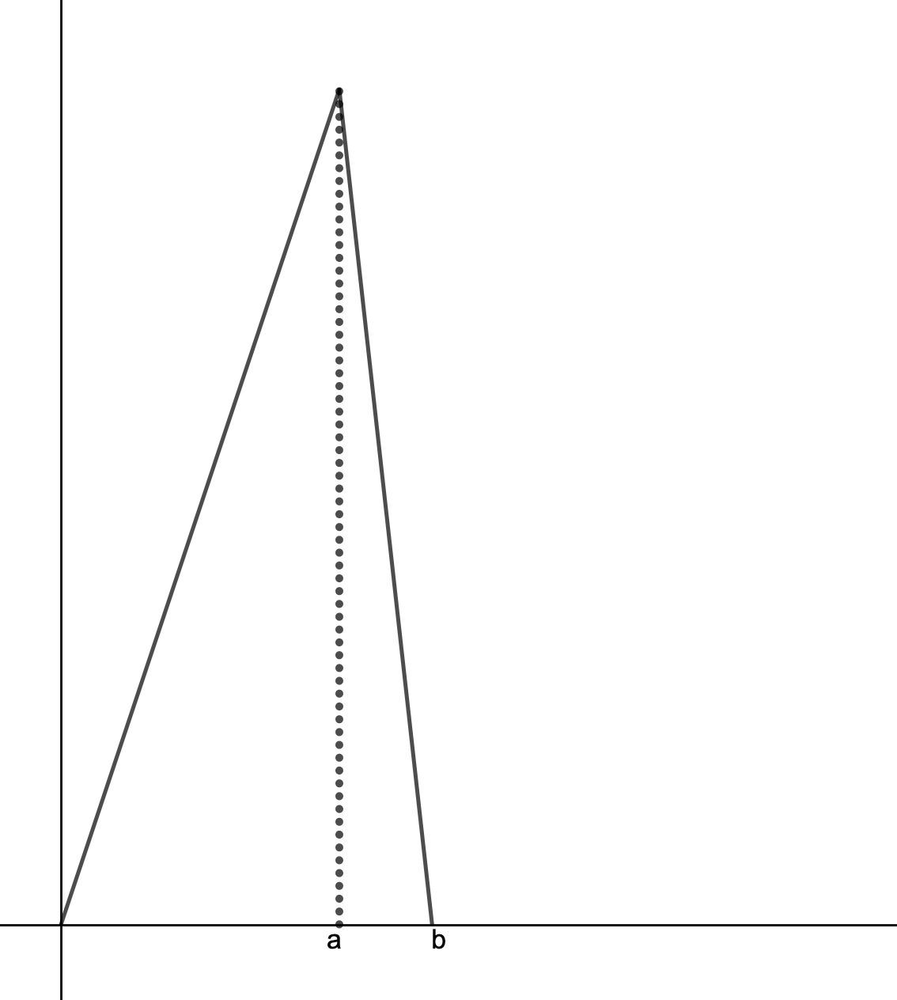

Griffiths Quantum Mechanics 2nd Edition: Problem 1.4
We have to first consider the given wavefunction. It is stated that:
$$\Psi(x, \ 0) \ = \ \left\{
\begin{array}{ll}
A\frac{x}{a} & \text{if} \ \ 0 \ \leq \ x \ \leq \ a \\
A\frac{b \ - \ x}{b \ - \ a} & \text{if} \ \ a \ \leq x \ \leq b \\
0 & \text{otherwise}
\end{array}
\right. $$
We are first tasked with normalizing the wavefunction,
that is finding the value of $A$ that satisfies the equation:
$$\displaystyle\int_{-\infty}^{\infty} \ |\Psi(x, \ t)|^2 \ \text{dx} \ = \ 1$$
This essentially ensures that all of the probabilities of finding a quantum system in a
particular state add up to one (since the particle has to be somewhere). Since this wavefunction
only yields a non-zero value between $0$ and $b$, we can discard the bounds of $-\infty$ and $\infty$
and simply consider the domain of $0 \ \leq \ x \ \leq \ b$. By the previously proved theorem (see textbook),
we know that if we normalize the wavefunction at one instacne in time, it will remain normalized as it evolves.
With this knowledge, if we normalize $\Psi(x, \ 0)$, we will have normalized it for all values of $t$. Let us set up our
integral:
$$\frac{|A|^2}{a^2}\displaystyle\int_{0}^{a} \ x^2 \ \text{dx} \ + \ \frac{|A|^2}{(b \ - \ a)^2}
\displaystyle\int_{a}^{b} \ (b \ - \ x)^2 \ \text{dx} \ = \ 1$$
$$\Rightarrow \ |A|^2 \ \Big(\frac{1}{a^2}\Big(\frac{x^3}{3} \Big)\biggr\rvert_{0}^{a} \ + \
\frac{1}{(b \ - \ a)^2}\Big(-\frac{(b \ - \ x)^3}{3}\Big)\biggr\rvert_{a}^{b}\Big) \ = \ 1$$
$$\Rightarrow \ |A|^2 \ \Big(\frac{1}{a^2}\Big(\frac{a^3}{3}\Big) \ + \
\frac{1}{(b \ - \ a)^2}\Big(\frac{(b \ - \ a)^3}{3}\Big)\Big) \ = \ 1$$
$$\Rightarrow \ |A|^2 \
\Big( \frac{a}{3} \ + \ \frac{b \ - \ a}{3} \Big) \ \Rightarrow \ \frac{|A|^2 b}{3}
\ = \ 1 \ \Rightarrow \ |A|^2 \ = \ \sqrt{\frac{3}{b}}$$
So we have normalized the wavefunction. Let us now consider what the function looks like. We have three points
of interest: $0$, $a$ and $b$. Now, looking at the wavefunction, from $0$ to $a$, with $A/a$ as a constant, the wavefunction
is simply linear and increasing. Through expansion we get a decreasing linear function with
some positive y-intercept: $A(b \ - \ x)/(b \ - \ a) \ = \ Ab/(b \ - \ a) \ - \ Ax/(b \ - \ a)$. Putting these two function together,
we get a graph of $\Psi(x, \ 0)$ that looks somewhat like this:

We know must find where the particle is most likely to be found at $t \ = \ 0$, for the given
wavefunction. Well, by simply looking at our graph, it is apparent that the particle is must likely to be
found at point $a$. To find the probability of finding a particle to the left of $a$, we simply integrate
over the wavefunction from $0$ to $a$. Well, we have already done this (when we were normalizing the wavefunction)!
We have:
$$\frac{|A|^2}{a^2}\displaystyle\int_{0}^{a} \ x^2 \ \text{dx} \ = \ \frac{|A|^2}{a^2} \ \frac{a^3}{3} \ = \ \frac{a}{b}$$
So the probability will be $a/b$. We can now check this for the cases that the textbook has presented to us. For $b \ = \ a$, we
simply get $P \ = \ a/b \ = \ a/a \ = \ 1$. So the probability of finding the particle to the left of $a$ is 100% in this case. This makes
sense, since if $b \ = \ a$, the wavefunction only yields a non-zero probability between $0$ and $a$, therefore the particle must be
in this region (between $0$ and $a$, therefore to the left of $a$).
For the second case, with $b \ = \ 2a$, we get $P \ = \ 0.5$. So there is a $50\%$ chance of finding the particle to the left of $a$. Again, this
makes sense, since the regions of $0$ to $a$ and $a$ to $b$ are the same size (both domains have length $a$). In addition, since the lines representing
the wavefunctions intersect at $a$, they must have the same slope in this scenario, and therefore the area under the curve for both regions are equivalent,
making the probability of finding the particle in one region rather than the other $50\%$.
Finally, let us find the expectation value of $x$. By the definition of the discrete expectation value, we are summing over all values of $x$, multiplying each value
by their repsective probability. For a continuous function (like the one we have here), we have to integrate over all $x$ values, each multiplied by the value of the probability
density at that point. We can set up our integral like this:
$$\langle x \rangle \ = \ \displaystyle\int_{-\infty}^{\infty} \ x|\Psi(x, \ 0)|^2 \ \text{dx}$$
I simply brute-forced this integral by expanding and simplifying, resulting in a fairly gnarly process. There is probably a more elegant way
to do this integral, but for now, I'm just going to show the long version:
$$\langle x \rangle \ = \ |A|^2 \ \Big( \frac{1}{a^2}\displaystyle\int_{0}^{a} \ x^3 \text{dx} \ + \ \frac{1}{(b \ - \ a)^2}\displaystyle
\int_{a}^{b} \ xb ^2 \ - \ 2bx^2 \ + \ x^3 \ \text{dx} \Big)$$
$$\Rightarrow \ |A|^2 \ \Big( \frac{a^2}{4} \ + \ \frac{1}{(b \ - \ a)^2} \Big( \frac{b^4 \ - \ a^2b^2}{2} \ - \ \frac{2b^4 \ - \ 2ba^3}{3}
\ + \ \frac{b^4 \ - \ a^4}{4} \Big) \Big)$$
$$\Rightarrow \ \frac{3}{b}\Big(\frac{a^2}{4} \ + \ \frac{1}{(b \ - \ a)^2} \Big( \frac{b^4 \ - \ 3a^4 \ - \ 6a^2b^2 \ + \ 8ba^3}{12} \Big)\Big)$$
So at this point, I decided to plug this into Wolfram Alpha and see if the expression could be simplified further. It turns out, this big expression simplifies to:
$$\langle x \rangle \ = \ \frac{a}{2} \ + \ \frac{b}{4}$$
And so we have found the expectation value of $x$ is equivalent to a fairly simply expression. Plugging in some test value, we can see that this expression makes sense.
For example, if we have $b \ = \ 2a$, then $\langle x \rangle \ = \ a$. This makes sense, as we would expect the particle to be directly between the two equally-sized regions of
$0$ to $a$ and $a$ to $b$.